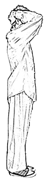
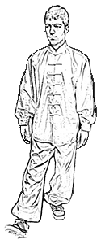
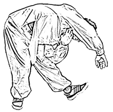
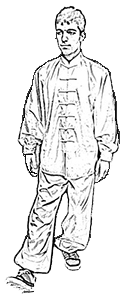
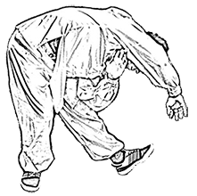
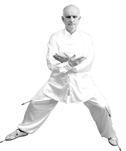

Новое тайцзицюань: практические советы
Титулы Мастера:
-
Председателем ассоциации ушу Шандуньского профессионального колледжа
(山东职业学院武术协会主席); -
Член постоянного комитета ассоциации ушу провинции Шандунь
(山东省武术协会常委); -
Заместитель Наставника в Центре культурного развития тайцзицюань стиля Ян «Вечная молодость»
(山东省永年杨式太极拳文化发展中心副主任); -
Инструктор тайцзицюань (стиля Ян и Чэнь), тренер по ушу – 7 дуан
(武术（杨式太极拳、陈式太极拳）七段教练员); -
Спортивный судья
(考评员); -
Инструктор по оздоровлению
(健康管理师).
Подготовка к занятиям (разминка):
Кай лас ин дзин ши (开拉心经势)
- Ноги вместе, стоим естественно, взгляд вперед.
- Повернуть ладони предплечьями во вне, вытянуть, медленно поднимать вверх через сторону, ладонями вверх.
- Вверху развернуть предплечье, ладони развернуть вверх, пальцы направить друг к другу.
- Легко повернуть корпус вправо, левой рукой упереться вверх, вытягивая левый локоть; ребра с левой стороны до предела опустить вниз; расслабиться и остановить движение.
- Возвратиться в исходное положение
- Легко повернуть корпус влево, правой рукой упереться вверх, вытягивая правый локоть; ребра с правой стороны до предела опустить вниз; расслабиться и остановить движение.
- Возвратиться в исходное положение.
- Движение сделать три раза в разные стороны, вернуться в исходное положение.
Внимание: движение выполнять расслаблено, медленно, разглаживая бок, растяжение производить в меру, прислушиваясь к ощущениям в теле, чтобы внутренние ощущения гармонировали с внешними телодвижениями.
Целью данного упражнения является прочистить сеть меридианов, для циркуляции энергии ци в нашем теле, чтобы оживить ци и работу сердца, тем самым повысить наше желание двигаться.
Упражнение может использоваться для разработки плечевого сустава и межреберных мышц.
Да гон ши (打躬势)
- Завершить предыдущее упражнение, обе руки сцепляются пальцами и опускаются на затылок; локти развести в сторону; взгляд вперед.
- Дальнейшие движения выполняются в строгой последовательности: свести локти, наклонить голову к груди, округлить спину, наклонить поясницу; позвоночник сгибается вперед, начиная от первого позвонка до самого нижнего отдела.
- Движения выполняются в строгой последовательности: распрямить тазобедренный сустав, выпрямить поясницу, раскрыть грудь, поднять голову, развести локти; позвоночник распрямляется от крестцового отдела до возвращения в вертикальное положение; прекратить движение, сохраняя размеренность телодвижений и расслабленность тела; дыхание нормализуется за один вдох.
- Повторить 3 раза движение пп.2-3, увеличивая при каждом подходе амплитуду движения; первый наклон – натяжение в области копчика; второй наклон – в области колена; третий наклон – в области стопы; дыхание естественное.

Внимание: движение выполняются расслабленно, медленно, с растягиванием в меру, прислушиваясь к ощущениям в теле, чтобы внутренние ощущения гармонировали с внешними телодвижениями.
Целью упражнение – растяжение позвоночника, очищение меридианов (энергетических каналов в традиционной китайской медицине), активизации янской энергии и в целом энергии движения.
Ли яо тю дун ши (立腰屈蹲势)
- Оторвать обе руки от затылка и над головой переместить вперед; взгляд направлен вперед.
- Руки опускаются вниз по центральной линии до уровня живота; одновременно левой ногой сделать шаг в сторону на ширину плеч.
- Ноги прямые, верхняя часть корпуса слегка наклонена вперед; руки разводятся по сторонам и опускаются на колени; взгляд направлен вперед.
- Наклонить корпус вперед, сохраняя прямую спину – поднять голову и посмотреть вперед – согнуть колени, опустить ягодицы, округлить спину – выпрямить колени, выпрямить спину – выпрямить корпус, кисти находятся на коленях – присесть, сохраняя вертикальное положение и прямую спину; взгляд направлен вперед.
- Встаем, выпрямляя колени, сохраняя прямую спину, совершаем наклон вперед; взгляд вперед и вниз.
- Повторить пункты 4 и 5 три раза, увеличивая траекторию приседания с каждым последующим разом; в последний раз полностью выпрямить корпус, поясницу и колени; кисти отрываются от колен; встать; взгляд направлен вперед.
Внимание: При приседании и сгибании колен, в первую очередь обращать внимание на опускание ягодиц, выпрямлении поясницы и разведение колен по направлению стоп. Разгибая колени при выпрямлении, поднимаем голову и выпрямляем корпус; подъем корпуса осуществляется только за счет работы ног. Специально следить за дыханием при выполнении упражнения нет необходимости.
Да гонг бу ши (大弓步势)
- Левой ногой шагнуть вперед, принимая переднюю стойку (примерно на расстояние, равное пятикратной длине стопы). Носок левой ноги слегка повернуть внутрь, при этом развернуть носок правой ноги на 45º наружу. Правую ногу полностью выпрямить. Левая нога сильно сгибается в колене, чтобы голень стала в вертикальное положение. Обе руки налегают на левое колено. На первых порах можно положить левую ладонь на левое колено, а правую ладонь – на правую заднюю поверхность бедра, чтобы контролировать положение правой ноги. Голова и шея прямые, спина ровная, взгляд направлен вперед.
- Правая стопа давит на землю, левое колено подается вперед, достигает уровня стопы, но не переходит вертикальной линии носка. Расслабиться и выйти из этого напряженного состояния. Совершить 4-8 подходов.
- Подтягиваем левую ногу, шагаем вперед правой ногой. Повторить движение 4 – 8 подходов.
- Подтягиваем правую ногу, выпрямляемся, принимаем исходное положение.

Внимание: Задняя нога полностью выпрямлена и напряженная. Обращать внимание на напряжение в районе колена. Верхняя часть тела выпрямлена. Поясница ровная и выстраивает все тело.
Пу бу ши (仆步势)
- Правой ногой отшагнуть далеко вправо, развернув при этом носок ноги на 45º. Одновременно поднять две руки в сторону. Ладони направлены вперед. Взгляд вперед.
- Медленно сгибать правую ногу в колене до полного приседа. Левая нога выпрямляется в колене. Правое колено направлено в сторону носка правой ноги. Голова посажена прямо вертикально. Поясница и корпус составляют прямую линию. Положение рук при выполнении данного упражнения остается неизменным.
- Макушка устремляется вверх, правая нога начинает выпрямляться и поднимать корпус. Руки находятся в неизменном положении, естественно подняты по сторонам.
- Правая нога полностью выпрямляется. Левая нога начинает сгибаться в колене до полного приседа. При этом колено левой ноги направлено в сторону носка. Голова вертикальна. Поясница и корпус составляют прямую линию. Положение рук при выполнении данного упражнения остается неизменным.
- Макушка устремляется вверх, левая нога начинает выпрямляться и поднимать корпус. Руки находятся в неизменном положении, естественно подняты по сторонам.
- Повторить упражнение (п. 2-5) 4 – 8 раз.
- Подтягиваем правую ногу к левой ноге. Принимаем исходное положение.


Внимание:Во время упражнения стопы полностью прилегают к земле, пятка не отрывается от пола. При сгибании ноги в колене во время приседания, колено всегда направляется в сторону носка одноименной стопы. Шея и голова выпрямлены, спина ровная. Приседаем медленно, встаем немного быстрее.
Бао сюэ шы (抱靴势)
- Стать прямо. Переместить центр тяжести на правую ногу. Левую ногу слегка приподнять. Вес тела полностью перенести на прямую правую ногу. Приподнять левое колено и охватить его левой рукой. Правой рукой взять левую стопу снаружи. Потянуть левую ногу вверх тянущим движением. Совершить 4 – 8 повторений.
- Левая стопа медленно и легко опускается на землю. Центр тяжести полностью перенести на левую ногу. Правая нога приподнимается, а левая – выпрямляется. Вес тела полностью на левой ноге. Приподнять правое колено и охватить его правой рукой. Левой рукой взять правую стопу снаружи. Потянуть правую ногу вверх тянущим движением. Совершить 4 – 8 повторений.
- Медленно опускаем правую стопу на землю. Возвращаемся в исходное положение. Ноги вместе. Взгляд направлен вперед.
Внимание:Опорная нога полностью выпрямлена. Колено тянущей вверх ноги направлено вертикально вверх. Верхняя часть корпуса прямая.
Вэн дзу во сюэ ши (吻足卧靴势)
- Стать прямо.
- Руки равномерно через стороны поднимаются. Одновременно сгибается колено правой ноги. Левой ногой шагнуть вперед и поставить ее на пятку. Носок задирается вверх, колено выпрямлено. Наклониться вперед верхней частью туловища, взяться за левый носок и потянуть его. Медленно опускаться корпусом вниз. В идеале надо стремиться дотронуться нижней челюстью до носка левой ноги. Левое бедро оседает вниз.
- Выпрямится, подтянуть левую ногу, принять исходное положение.
- Руки равномерно через стороны поднимаются. Одновременно сгибается колено левой ноги. Правой ногой шагнуть вперед и поставить ее на пятку. Носок задирается вверх, колено выпрямлено. Наклониться вперед верхней частью туловища, взяться за правый носок и потянуть его. Медленно опускаться корпусом вниз. В идеале надо стремиться дотронуться нижней челюстью до носка правой ноги. Правое бедро оседает вниз.
- Выпрямится, подтянуть правую ногу, принять исходное положение.
- Руки равномерно через стороны поднимаются. Одновременно сгибается колено правой ноги. Левой ногой шагнуть влево и поставить ее на пятку. Носок задирается вверх, колено выпрямлено. Наклониться верхней частью туловища влево. Левая рука в вертикальном положении устремляется к правому плечу. Правой рукой через голову потянуться к носку левой ноги (или пятке). В идеале надо стремиться максимально приблизиться ухом к голени левой ноги. Левое бедро оседает вниз.
- Выпрямится, подтянуть левую ногу, принять исходное положение.
- Руки равномерно через стороны поднимаются. Одновременно сгибается колено левой ноги. Правой ногой шагнуть вправо и поставить ее на пятку. Носок задирается вверх, колено выпрямлено. Наклониться верхней частью туловища вправо. Правая рука в вертикальном положении устремляется к левому плечу. Левой рукой через голову потянуться к носку правой ноги (или пятке). В идеале надо стремиться максимально приблизиться ухом к голени правой ноги. Правое бедро оседает вниз.
- Выпрямится, подтянуть правую ногу, принять исходное положение.
- Повторить упражнение (п. 2-9) 4 – 6 раз.
 

Внимание:Движения должны быть легкими, медленными и расслабленными. Согнувшись до предела, необходимо сделать задержку. При наклоне вперед руки вначале разводятся по сторонам, а потом направляются вперед к стопе. При боковом наклоне руки вначале разводятся по сторонам, а потом поочередно сгибаются в разные направления.
Базовый комплекс:
Кай лас ин дзин ши (开拉心经势)
- Ноги вместе, стоим естественно, взгляд вперед.
- Повернуть ладони предплечьями во вне, вытянуть, медленно поднимать вверх через сторону, ладонями вверх.
- Вверху развернуть предплечье, ладони развернуть вверх, пальцы направить друг к другу.

Внимание: движение выполнять расслаблено, медленно, разглаживая бок, растяжение производить в меру, прислушиваясь к ощущениям в теле, чтобы внутренние ощущения гармонировали с внешними телодвижениями.
Кай лас ин дзин ши (开拉心经势)
- Ноги вместе, стоим естественно, взгляд вперед.
- Повернуть ладони предплечьями во вне, вытянуть, медленно поднимать вверх через сторону, ладонями вверх.
- Вверху развернуть предплечье, ладони развернуть вверх, пальцы направить друг к другу.
Внимание: движение выполнять расслаблено, медленно, разглаживая бок, растяжение производить в меру, прислушиваясь к ощущениям в теле, чтобы внутренние ощущения гармонировали с внешними телодвижениями.
Кай лас ин дзин ши (开拉心经势)
- Ноги вместе, стоим естественно, взгляд вперед.
- Повернуть ладони предплечьями во вне, вытянуть, медленно поднимать вверх через сторону, ладонями вверх.
- Вверху развернуть предплечье, ладони развернуть вверх, пальцы направить друг к другу.
Внимание: движение выполнять расслаблено, медленно, разглаживая бок, растяжение производить в меру, прислушиваясь к ощущениям в теле, чтобы внутренние ощущения гармонировали с внешними телодвижениями.
Кай лас ин дзин ши (开拉心经势)
- Ноги вместе, стоим естественно, взгляд вперед.
- Повернуть ладони предплечьями во вне, вытянуть, медленно поднимать вверх через сторону, ладонями вверх.
- Вверху развернуть предплечье, ладони развернуть вверх, пальцы направить друг к другу.

Внимание: движение выполнять расслаблено, медленно, разглаживая бок, растяжение производить в меру, прислушиваясь к ощущениям в теле, чтобы внутренние ощущения гармонировали с внешними телодвижениями.
Кай лас ин дзин ши (开拉心经势)
- Ноги вместе, стоим естественно, взгляд вперед.
- Повернуть ладони предплечьями во вне, вытянуть, медленно поднимать вверх через сторону, ладонями вверх.
- Вверху развернуть предплечье, ладони развернуть вверх, пальцы направить друг к другу.
Внимание: движение выполнять расслаблено, медленно, разглаживая бок, растяжение производить в меру, прислушиваясь к ощущениям в теле, чтобы внутренние ощущения гармонировали с внешними телодвижениями.
Кай лас ин дзин ши (开拉心经势)
- Ноги вместе, стоим естественно, взгляд вперед.
- Повернуть ладони предплечьями во вне, вытянуть, медленно поднимать вверх через сторону, ладонями вверх.
- Вверху развернуть предплечье, ладони развернуть вверх, пальцы направить друг к другу.
Внимание: движение выполнять расслаблено, медленно, разглаживая бок, растяжение производить в меру, прислушиваясь к ощущениям в теле, чтобы внутренние ощущения гармонировали с внешними телодвижениями.
Кай лас ин дзин ши (开拉心经势)
- Ноги вместе, стоим естественно, взгляд вперед.
- Повернуть ладони предплечьями во вне, вытянуть, медленно поднимать вверх через сторону, ладонями вверх.
- Вверху развернуть предплечье, ладони развернуть вверх, пальцы направить друг к другу.
Внимание: движение выполнять расслаблено, медленно, разглаживая бок, растяжение производить в меру, прислушиваясь к ощущениям в теле, чтобы внутренние ощущения гармонировали с внешними телодвижениями.
Основные принципы тренировок.
Исполнять форму тайцзицюань (таолу) на тренировках необходимо сосредоточенно и красиво. Чувство красоты, радость в душе и теле, душевный комфорт – это первостепенная задача при выполнении формы. Каждый человек имеет различное сложение тела, поэтому на первых порах новичок должен обращать внимание, прежде всего, на изучение последовательности и на красоту движений с обязательным чувством внутренней гармонии души и тела. Если проигнорировать это замечание, то в дальнейшем может появиться чувство дискомфорта в различных участках тела, что приведет к ошибкам в технике (во внутреннем мире телодвижений). Тайцзицюань относится к внутреннему семейству боевых искусств, поэтому основное внимание отводится именно внутренним процессам в технике телодвижений. Если гнаться лишь за внешней красотой телодвижений, то получится как в китайской поговорке «шэ бэн тьоу мо» («оставлять основное и размениваться на мелочи» – буквально «прекратить преследовать первостепенноважное и погнаться за менее значимым»). Об этом говорил великий Мастер Сун Лу Танг (孙禄堂).
Во время тренировок необходимо следовать принципу «гонг», что означает тренироваться правильно с чувством уюта и обретенной легкости, как на «седьмом небе». Чем чаще у нас присутствует это чувство на тренировках, тем больше в нас накапливается кунг-фу. Даже когда у нас только появляется мысль о следовании принципу «гонг», наше кунг-фу улучшается с каждой тренировкой.
Шесть основных принципов:
- «Сон» (松) – не нужно напрягаться и использовать физическую силу. На занятиях тайцзицюань тело и сознание расслаблены, тренировка проходит без лишних мыслей в сознании, так легче обрести спокойное и радостное состояние. «Сон», как предпосылке и обязательному условию, необходимо уделять особое внимание.
- «Хуан» (缓) – «медленно» (в отношение сознания) – это не скорость наших телодвижений, здесь нет прямой связи. Речь идет о том, что наши физические движения (ритмичность движений) должны отставать от скорости нашего сознания, от желания осуществить эти движения. «Хуан» противостоит «дзи» (急) (быстрый стремительный). Под «хуан» можно понимать народное изречение «взять себя в руки; сдержаться; овладеть собой» (沉住气). При быстрых движениях мысли должны быть еще быстрее, и, наоборот, при замедлении мысли, движение тела замедляется еще быстрее. Руководствуясь принципом «хуан» мы гарантируем себе физическую и духовную гармонию в своем теле.
- «Джан» (展) – наряду с принципами «сон» и «хуан», принцип «джан» добавляет нам еще одно важное условие. У каждого человека существует свой физический предел (по гибкости и т.д.), на котором мы завершаем движение. Принцип «джан» показывает необходимость продолжать движение, слегка преодолевая свой максимум, именно после того, как мы достигаем своего предела в данном упражнении. Для этого необходимо расслабиться и податься немного вперед, расслабиться и опять податься вперед. Отрабатывая технику, выполняя таолу, завершая одну из 36 позиций комплекса тайцзицюань, необходимо сделать над собой усилие, слегка продолжая движение. Постарайтесь растянуться, развесится, подобно кроне дерева, в каждом направлении: вверх-вниз-вперед-назад-влево-вправо. При выполнении разминочных упражнений, отследив за выполнением принципов «сон» и «хуан», выполните движение до предела, потом расслабьтесь и совершите движение еще больше, слегка преодолевая свой предел. При следовании принципу «джан» у вас будет наблюдаться прогресс.
- «Джу» (注) – наше сознание полностью должно контролировать ощущение нашего тела. Если представить, что занятия тайзцицюань рассматривать, как посев семени, то принцип «джу» является результатом. Только, постоянно держа под контролем ощущения своего тела, можно войти в состояния радости и спокойствия. Принцип «джу» показывает, комфортно нам на занятиях или нет. Непрерывно контролируя свои ощущения, можно легко регулировать свои движения.
- «Ду» (度) – «Ду» указывает на меру наших занятий (самое подходящее время, количество и интенсивность), чтобы избежать недостатка или перебора. При недостаточной интенсивности занятий нельзя достичь желаемого результата. При чрезмерном занятии – легко вызвать негативные ощущении в теле, тем самым лишить себя ощущения радости и спокойствия «тьен ю» («恬愉»), в котором надо стремиться постоянно пребывать. Каждый наделен различными физическими данными, поэтому каждый определят для себя «ду» лично.
- «Хэ» (合) – «Хэ» указывает на гармонию. На занятиях тайзцицюань «хэ» подразделяется на несколько уровней: а) начальный уровень – указывает на координацию и гармоничность движений (рук-ног, левой-правой стороны, переда-зада корпуса, сила движений, позиции рук и ног, постановка стоп, шагистика, взгляд и т.д.); б) средний уровень – указывает на соединение внутреннего и внешнего в одно целое (энергия и мысль, мысль и дух, дух и сила, сознание и движение и т.д.); в) высший уровень – указывает на «тьен жэн хэ и» («天人合一»), после того, как тело и сознание достигнут полной гармонии, когда дух будет руководить движениями. Вследствие этого мы не будем беспокоиться, не будем обдумывать каждое последующее движение. Мы будем растворяться между небом и землей, достигнем состояния наивысшей гармонии Вселенной.
practice
Tokyo is the capital of Japan.
Tips
Tokyo is the capital of Japan.
«Новое тайцзицюань» в Беларуси. Мастер-основатель Джанг Либин (титулы Мастера) в 2013 году провел в Минске первый ознакомительный семинар по основам тайцзицюань стиля чэнь. В 2015 году Мастер вновь посетил Беларусь и провел второй базовый семинар в Гомеле. Он оставил пожелания практиковать и развивать искусство тайцзицюань.
Учителя Мастера:
-
Ли Чэнг Ин – профессор, Шаньдунский педагогический университет
(山东师大李成银教授); -
Ванг Тинг Куй – народный Мастер ушу
(民间武术家王庆魁先生); -
Чэнг Цуй Пинг – народный Мастер Тайцзицюань
(民间太极拳师陈翠萍老师、; -
Ха Лэ Джы – преподаватель традиционного тайцзицюань стиля Чэнь
(陈式洪派太极拳传人哈乐之老师); -
Ли Эн Дзьу – преподаватель, носитель традиционного тайцзицюань стиля Чэнь
(陈式洪派太极拳掌门人李恩久老师); -
Сьа Хэнг Дзи – преподаватель и носитель техники тайцзицюань стиля Ян
(杨氏查拳传人夏恒基老师); -
Ли Чун Хэ – преподаватель, носитель техники Ен-тин-цюань
(燕青拳传人李春和老师、); -
Фанг Дзюн Шан – преподаватель, носитель техники тайцзицюань Ян-бан-хоу-ши
(杨班侯氏太极拳传人房俊善老师、); -
Ян Джэнг Дуо – профессор, Мастер тайцзицюань стиля Ян
(杨氏太极拳大师杨振铎教授、); -
Фу Шэнг Юан – профессор, Мастер тайцзицюань стиля Ян
(杨式太极拳大师傅声远教授、); -
Ванг Дай Йоу – почетный преподаватель ушу города Цзинань
(济南著名武术家王代友老师).
Мастер Джанг Либин закончил Шандунский педагогический университет по специальности ушу. Более 30 лет он упорно тренируется под руководством Учителей по различным направлениям ушу, цигун, 18 движений архатов, алохань и др. Активно занимается саньда (спортивной борьбой – Sanshou) и цигун Luohan quan. Является членом спортивного общества по исследованию цигун, написал диссертацию на тему «Использование закона перемещения в обучении ушу». Три года изучал фундаментальные основы китайской медицины. Состоит в китайской ассоциации ушу провинции Шандун. За диссертацию на тему «Суть техники вступления в схватку» был награждён научным обществом ушу призом третьей степени.
В настоящее время Джанг Либин является инициатором создания нового и уникального подхода к освоению тайцзицюань, развивает собственную Школу – «Новое тайцзицюань».